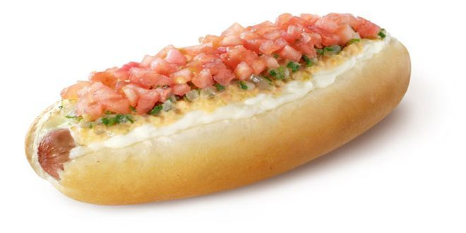

Home
How to make the best "dinamico"

A "Completo dinamico" is a traditional and one of the most wanted chilean completos
Want to make ur own completo?
You will need:
- 4 Completo's buns
- 4 Sausages
- 200g of sauerkraut
- 2 Avocados
- 2 Tomatoes
- Mayo
- Salt
- Olive oil
For "Americana" Sauce:
- 1 Carrot
- 1 Onion
- Pickles
- White vinegar
- Salt
Step by step
How to do a Completo dinamico?
- Prepare the "Americana" sauce: Peel and grate 1 carrot. Then, finely chop ½ an onion and 2 pickles. Mix everything in a bowl and add 2 tbsp. of vinegar and 1 tsp. of salt. Let it all rest for 5 minutes to intensify the flavors.
- Prepare the avocados: Cut and mash 2 avocados in a bowl with 1 tsp. of salt. If you want a creamier texture, add 1 tbsp. of olive oil.
- Chop the tomato: Wash, peel, and dice the 2 tomatoes into small cubes. Then, place them in a bowl, add ½ tsp. of salt, and mix well.
- Heat the sauerkraut:In a pan, heat the sauerkraut over medium heat for 2-3 minutes. If you prefer a milder flavor, you can rinse it before heating.
- Cook the sausages:Boil water in a small saucepan and, when hot, add the 4 sausages. Cook for 3-4 minutes, until piping hot. You can also put them in a frying pan if you prefer a crispier texture.
- Heat the buns:Open the buns and heat them in the oven for 3 minutes at 180°C, or in a pan without oil until warm.
- Lets assemble:Put a sausage inside each bun. Then, add a layer of sauerkraut, followed by "Americana" sauce, chopped tomato and a generous layer of avocado. Finish with a good amount of mayonnaise.
- Serve and enjoy:Pair your Completo Dinamico with some french fries or a cold drink. You will love it!